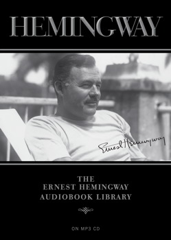
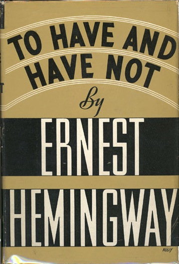
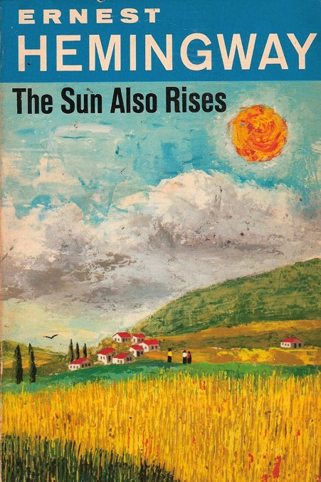

The Old Man and the Sea
Hemingway, Ernest
The Old Man and the Sea is the story of an epic struggle between an old, seasoned fisherman and the greatest catch of his life. For eighty-four days, Santiago, an aged Cuban fisherman, has set out to sea and returned empty-handed. So conspicuously unlucky is he that the parents of his young, devoted apprentice and friend, Manolin, have forced the boy to leave the old man in order to fish in a more prosperous boat. Nevertheless, the boy continues to care for the old man upon his return each night. He helps the old man tote his gear to his ramshackle hut, secures food for him, and discusses the latest developments in American baseball, especially the trials of the old man hero, Joe DiMaggio. Santiago is confident that his unproductive streak will soon come to an end, and he resolves to sail out farther than usual the following.